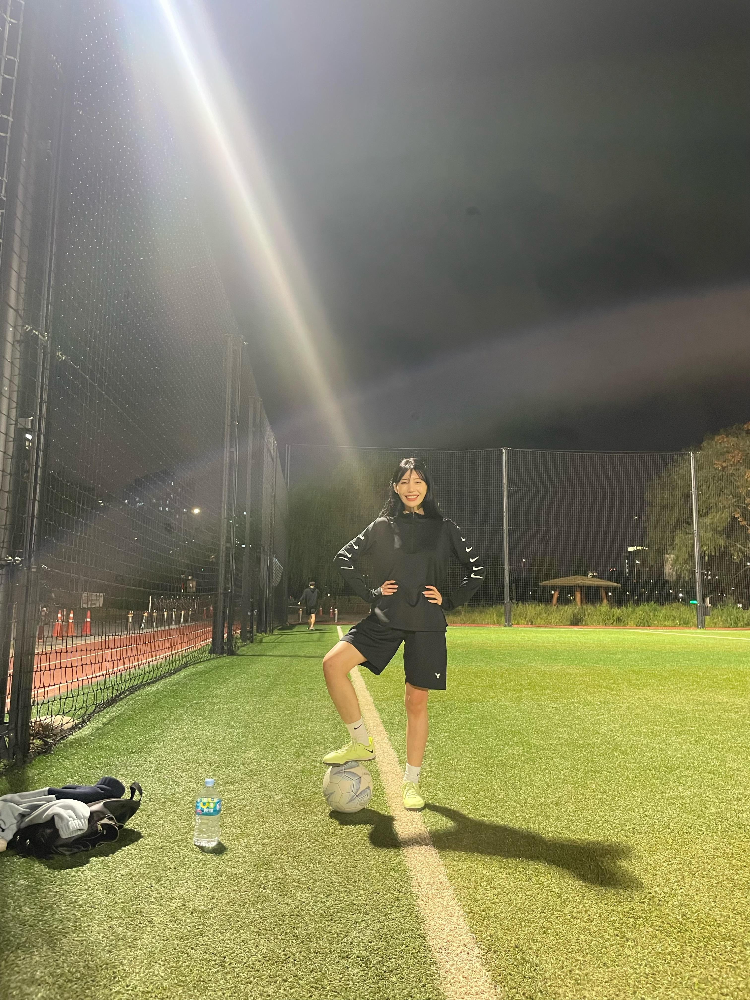

HUA LI
Ph.D. Student
50 Yonsei-Ro, Seodaemun-Gu
Department of Industrial Engineering
Intelligent Manufacturing Systems Lab
Yonsei University
Seoul, Korea
Email: li_hua611@yonsei.ac.kr

Biography
I am a Ph.D. student in Industrial Engineering at Yonsei University, Seoul, Korea. My research interests lie in operations research, smart logistics, and AI-driven decision-making, with a particular focus on scheduling, dispatching, and optimization problems in manufacturing and logistics systems.
My recent work includes EV charging scheduling using mixed-integer linear programming and genetic algorithms, multi-agent deep reinforcement learning-based vehicle dispatching, and OHT system optimization in semiconductor fabs.
I led a project with KODATA to develop a graph neural network-based model for enterprise risk detection using firm-level information and transaction network data.
Before starting my Ph.D. studies, I founded a startup company in China, where I worked on Manufacturing Execution System (MES